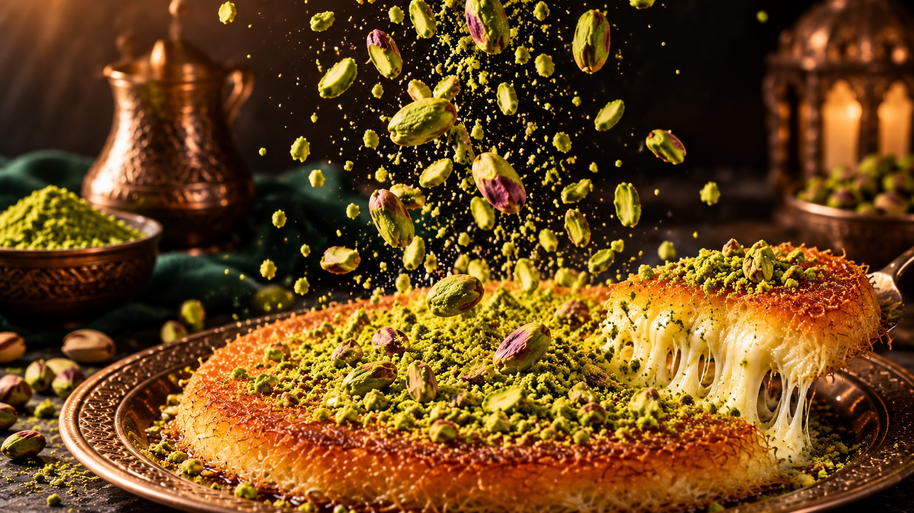
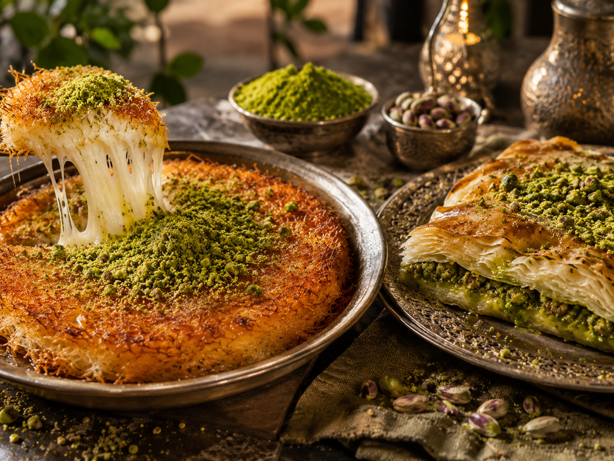
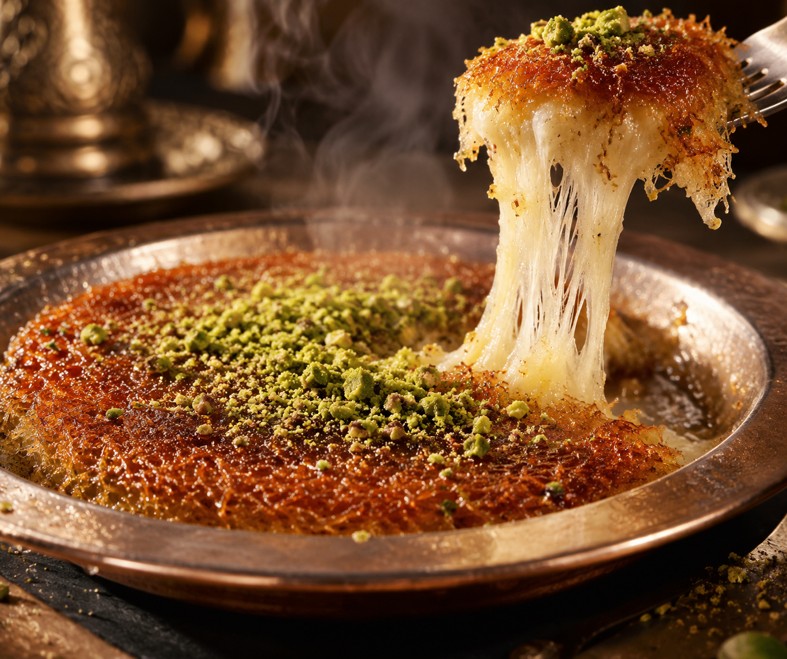
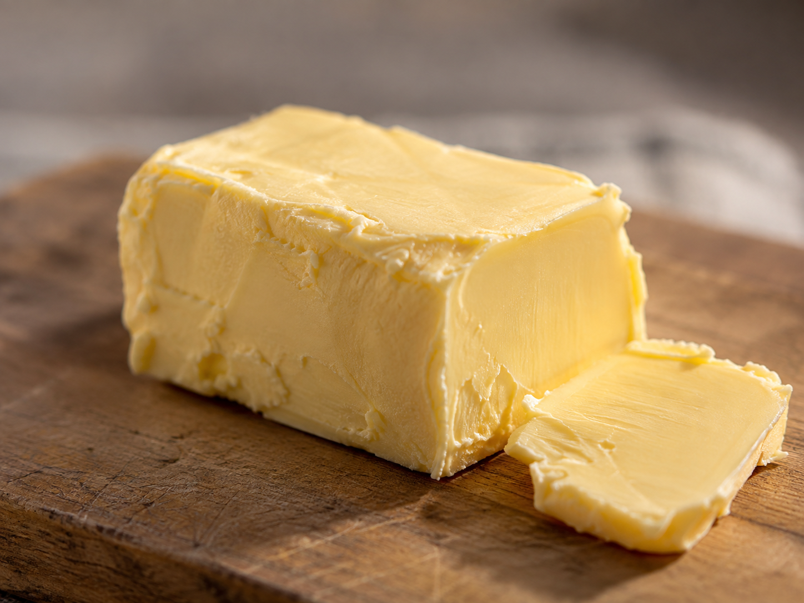
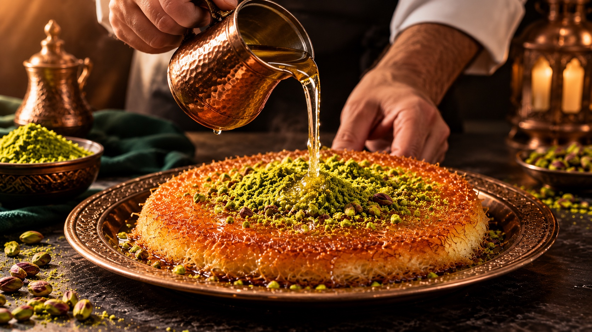

Antep fıstığı
Bol ve özenle seçilmiş.
İncecik tel kadayıf, uzayan peynir ve Antep fıstığının eşsiz buluşması.
Lezzetleri keşfet
İncecik kadayıfın çıtırtısı, Antep fıstığının kokusu ve tam kıvamında peynir… İncizade’de tatlı, güzel anların bahanesi.
Hikâyemiz ↗
Altın renginde çıtır kadayıf, sıcacık peynir ve Antep fıstığının geleneksel uyumu.
Ürünü incele
Bol ve özenle seçilmiş.

Kat kat lezzetin sırrı.

Gelenekten gelen ustalık.
Güzel anlar, güzel bir tatlıyla başlar.
İncizade lezzetleri